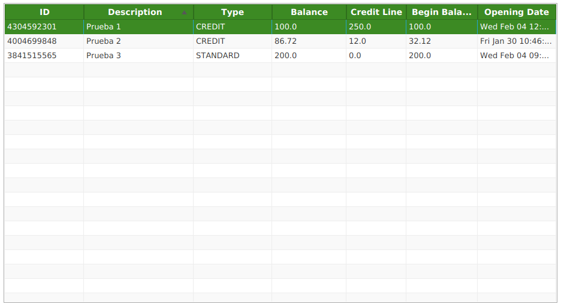
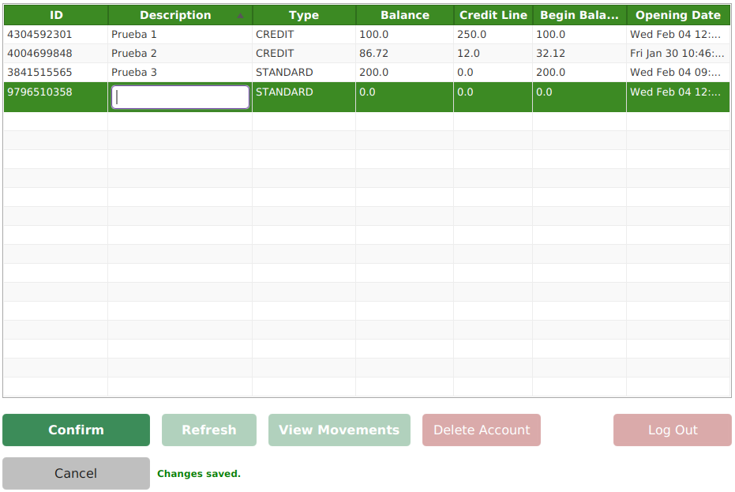
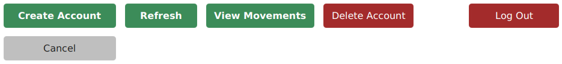
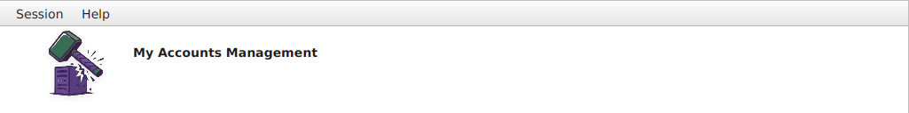

Accounts Management Guide
This terminal allows you to oversee and manage your bank accounts. Below is a detailed explanation of the interface and its operations.
1. The Accounts Table
The central element of the window is the TableView. Here you can monitor all your financial products at a glance.

Overview of the main dashboard and data grid.
- Balance: Your current funds. If it turns RED, the account is overdrawn.
- Opening Date: The exact moment the account was registered in our system.
2. Creating a New Account
To register a new product, use the Create Account button. The system enters "Creation Mode":

Creation mode: In-line editing enabled for the new record.
- A new, empty row appears at the top of the table.
- In-line Editing: Double-click the Description and Begin Balance cells to type.
- Type Selection: Choose between Standard or Credit using the dropdown.
- Finalize by clicking Confirm or Cancel to discard.
3. Financial Operations & Navigation
Use the action buttons at the bottom to interact with the selected account:

Toolbar for data synchronization, navigation, and session management.
| Action | Description |
|---|---|
| Refresh | Synchronizes the table with the server to show the latest updates. |
| View Movements | Navigates to the transaction history of the selected account. |
| Log Out | Ends your current session and returns to the Sign In screen. |
4. Deleting and Context Menu
To remove an account, select it and press Delete Account. You can also right-click a row to open the Context Menu.
 Fast-access context menu for row-specific operations.
Fast-access context menu for row-specific operations.
Business Rules:
- Immutable Fields: Once created, you cannot change the Begin Balance or Account Type.
- Data Integrity: Accounts with existing movements cannot be deleted.
5. Navigation and Help
The top bar provides global access to session management and this guide:

Global menu for session control and help documentation.
- Session Menu: Provides a secondary way to Sign Out or Close the application.
- Help Menu: Access this guide (Content) or technical info (About).